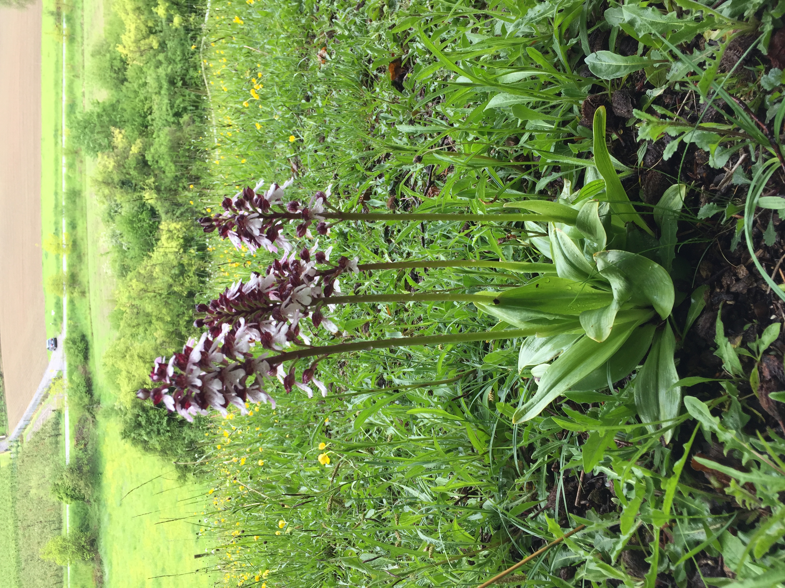

3.0.0.1 Librerías de R requeridas para el siguiente módulo
3.1 Introducción
Todas las especies biológicas poseen una historia de vida que comienza con el nacimiento y culmina con la muerte. En su hábitat natural, la supervivencia de la mayoría de las plantas depende de la continuidad de todas las etapas de desarrollo —semilla, plántula, juvenil, adulto y eventos reproductivos— a lo largo del ciclo vital. Aunque estas etapas suelen incluirse en los análisis, algunas pueden omitirse; por ejemplo, la fase de semilla en especies que se reproducen vegetativamente mediante clones (como plátanos, papas, piñas, vainillas y numerosas plantas ornamentales y medicinales).
Desde la perspectiva de la conservación y la ecología, es fundamental evaluar el ciclo de vida completo, identificar las características que limitan la supervivencia y la reproducción en el hábitat natural, y determinar cuáles etapas son más relevantes para el crecimiento poblacional. La persistencia de una especie depende de procesos viables que mantengan una población estable o en aumento. El método más adecuado para evaluar esta persistencia consiste en analizar las etapas críticas de la historia de vida y aplicar matrices de proyección poblacional para estimar los cambios en el tiempo, identificando si la población crece, disminuye o se mantiene estable.
Antes de iniciar cualquier estudio poblacional, se recomienda elaborar un diagrama del ciclo de vida de la especie de interés. Este paso previo a la recolección de datos permite visualizar el ciclo hipotético, identificar etapas críticas, factores que influyen en el crecimiento y supervivencia, y definir qué información debe obtenerse en campo. Los diagramas son herramientas esenciales para comprender la biología del organismo y anticipar los factores que afectan su desarrollo.
Un diagrama de ciclo de vida es una representación gráfica de los estadios que atraviesa un organismo a lo largo de su existencia. En este capítulo, se mostrará cómo crear diagramas de ciclo de vida en R utilizando la librería Rage, enfatizando la diferencia entre el modelo hipotético y los datos que pueden recolectarse en campo.
3.2 Ejemplo de ciclos de vida sencillo
En este primer ejemplo se presenta un ciclo de vida simple con tres estados: semillas, plántulas y adultos. Supongamos que se trata de una planta que se reproduce sexualmente y cuyas semillas no forman un banco, lo que implica que no hay latencia y germinan en el mismo año en que son dispersadas. En este escenario, las semillas germinan y se convierten en plántulas o mueren; las plántulas crecen y se transforman en adultos o mueren; y los adultos se reproducen y finalmente mueren. Cada etapa dura un año: el primero corresponde a la semilla, el segundo a la plántula y el tercero al adulto, que contribuye con nuevas semillas. Por lo tanto, el ciclo completo dura tres años. Este es un ejemplo hipotético, ya que en la naturaleza los organismos rara vez presentan ciclos tan simples.
La matriz de transición para este ciclo es la siguiente: el 50 % de las semillas germinan y se convierten en plántulas, el 40 % de las plántulas alcanzan la etapa adulta y cada adulto produce en promedio 3.2 semillas. En el diagrama, las líneas verdes representan crecimiento y las líneas amarillas representan reproducción.
El ciclo de vida hipotético de una orquídea epífita se representa en el gráfico mediante líneas verdes para indicar transición entre etapas, líneas rojas para señalar permanencia y líneas amarillas para la reproducción. El ciclo comienza con la germinación de la semilla sobre la corteza de un árbol, seguida por las fases de plántula, juvenil y adulto, etapa en la cual ocurre la floración y producción de semillas. Exceptuando la fase de semilla, cada etapa puede prolongarse de un año a otro, lo que evidencia un ciclo plurianual; esta característica se refleja en la diagonal principal de la matriz de transición, cuyos valores son mayores a cero cuando existe permanencia. Solo los individuos adultos son capaces de reproducirse. Si el diagrama correspondiera a datos empíricos, sería necesario contar con información para todas las etapas (semilla, plántula, juvenil y adulto); sin embargo, la revisión bibliográfica realizada no identificó estudios que incluyan datos completos, debido principalmente a la dificultad de localizar semillas y plántulas en condiciones naturales, dado su tamaño extremadamente reducido (milimétrico) y la complejidad de seguir su desarrollo a lo largo del tiempo.
3.4 Ciclo de vida de orquídeas en la literatura científica
A continuación se presentan diversos esquemas de ciclo de vida utilizados en distintas publicaciones. Estos ejemplos evidencian la ausencia de un modelo estandarizado, ya que cada investigador define un ciclo particular en función de su comprensión del ciclo biológico de la especie estudiada, la factibilidad de seguimiento de individuos a lo largo del tiempo y los objetivos específicos de la investigación.
Los casos analizados incluyen tanto especies terrestres como epífitas, y reflejan la diferencia entre los ciclos de vida hipotéticos y las limitaciones impuestas por la recolección de datos en condiciones de campo. Esta variabilidad pone de manifiesto la complejidad inherente al estudio demográfico de orquídeas y la necesidad de adaptar los modelos a las características ecológicas y metodológicas de cada estudio.
3.4.1 Especies Epífitas
3.4.1.1Laelia speciosa
La información presentada se basa en la tesina de Mariana Hernández-Apolinar (Hernández-Apolinar, 1992), uno de los primeros estudios sobre dinámica poblacional en orquídeas epífitas. El objetivo principal de dicho trabajo fue evaluar el impacto de la recolección sobre la dinámica poblacional de Laelia speciosa.
El ciclo de vida propuesto se compone de cinco etapas, según lo ilustrado en la figura 25a de la tesina:
Semillas
Plántulas
3 etapas de tamaño de planta donde 2 de las etapas son adultos y pueden producir semillas
Es importante señalar que se realizó una estimación tanto de la cantidad de semillas producidas como de la proporción que germina y se convierte en plántula en el ciclo siguiente. Este enfoque permitió incorporar procesos de transición y reproducción en el modelo, a pesar de las limitaciones inherentes a la observación directa de semillas y plántulas en condiciones naturales.
El estudio de (Raventós et al., 2018) analizó la dinámica poblacional de Telipogon helleri considerando tres clases de tamaño: individuos inmaduros, adultos reproductivos pequeños y adultos reproductivos grandes. El ciclo de vida se representó mediante tres etapas, según lo ilustrado en la figura 1 de la publicación. El objetivo principal fue evaluar el efecto de las perturbaciones sobre el crecimiento poblacional, utilizando un enfoque basado en análisis de dinámica transitoria. Los autores identificaron tres tipos de transición en la historia de vida de la especie:
Transición a una etapa subsiguiente (indicada en verde)
Permanencia en la misma etapa (flechas rojas)
Regresión en tamaño (color violeta)
Reproducción (color amarillo)
Cabe destacar que los individuos adultos grandes presentan una mayor contribución a la producción de semillas (0.5359) en comparación con los adultos pequeños (0.1573), lo que subraya la importancia de la estructura de tamaños en la dinámica poblacional.
En el trabajo de Coates y colaboradores con Prasophyllum correctum se recolectaron datos de la etapa de plántula, juvenil, adulto y latencia de los individuos (Coates, Lunt & Tremblay, 2006). La historia de vida de la especie está representada por 4 etapas. Los datos provienen de la figura 4 de la publicación de (Coates, Lunt & Tremblay, 2006), donde hay un periodo de 3 o más años entre los periodos de régimen de fuegos. Una de la etapas distintivas de esta especie es la latencia vegetativa, lo que significa que las plantas no emergen cada año sus tubérculos (estructura de perennación) se mantienen vivos debajo del suelo. Muchas especies de orquídeas terrestres tienen latencia en las etapas de plántulas, juvenil y adultos.
En P. correctum, al igual que en otras especies terrestres, es difícil estimar su muerte debido a la presencia de latencia vegetativa. Esto típicamente es un problema de muestreo y no de la biología de la especie, ya que es muy difícil estimar la muerte de los individuos. La ausencia de una planta marcada no significa que este muerte, sino que potencialmente está en su fase latente. Poder diferencia un estado de otro, también es difícil, ya que no es ético modificar el hábitat para determinar si la planta esta viva o muerta, más aún si condieramos que muchas de las especies terrestres están en peligro de extinción. Una manera de dar solición a esta situación es hacer unos análisis para determinar cuál es la probabilidad de que esté vivo un individuo con latencia vegetativa de múltiples años. En este caso, se hace unos análisis usando análisis bayesiano (Tremblay et al., 2009) para determinar cual es la probabilidad que un individuo con latencia de múltiples
El tránsito a la fase de latencia vegetativa se indica en azul, en verde el crecimiento, en amarillo la reproducción y en rojo la permanencia en una misma etapa, incluyendo latente a latente.
En el trabajo de Waite y Hutchings 1991 con Ophrys sphegodes, se recolectaron datos de la etapa vegetativa, plantas en flor y latencia de un año y dos años, por consecuencia la historia de vida está representada por 4 etapas. Los datos provienen de la figura 1 y la tabla 3b (periodo de herbivoría por oveja) de la publicación de (periodo de herbivoría por oveja) de la publicación de (Waite & Hutchings, 1991). ). En este caso, se hace análisis para determinar cuál es la probabilidad que un individuo con latencia vegetativa múltiple (uno o dos años) este vivo al comparar poblaciones que están sujetas a la herbivoría por ovejas o ganado.
Dado que el análisis se enfoca en la sobrevivencia, en el estudio no se incluye la reproducción (no hay línea amarilla). Las etapas que pasen a latente el siguiente año se señalan en azul, las que se quedan en la misma etapa están en rojo, mientras que en verde el tránsito a una etapa no latente.
3.4.2.3Cypripedium parviflorum, Epipactus atrorubens y Orchis purpurea
Orchis purpurea. Foto: Hans Jacquemyn
La dimensiones de la matriz y la cantidad de etapas o años incluidos en un análisis depende de múltiples factores. Cuando se trabaja con datos de campo, el acceso a individuos de cada etapa del ciclo de vida es, sin duda, un factor determinante. En la revisión de la publicaciones sobre orquídeas se encuentran análisis matriciales que varían entre 3 y 29 etapas de desarrollo, en promedio 5.6 etapas (desv. estandard de 3.2). El trabajo con mayor número de etapas es el de (Shefferson, Warren & Pulliam, 2014), que utilizó 29 en Cypripedium parviflorum var. parviflorum.
El costo de pasar a una fase latente después de diferentes etapas se evaluó en Epipactus atrorubens. En este análisis se definieron 11 estados, considerando la posibilidad de entrar en latencia vegetativa desde todas estas fases emergentes (Jäkäläniemi et al., 2011). En Orchis purpurea, los autores modelaron el diagrama del ciclo de vida, definiendo 6 etapas de desarrollo: protocormos, turberculos, plántulas, juveniles (más de un año y menos de 3 hojas), plantas sin flores (más de 3 hojas) y plantas con flores, a continuación se presenta la matriz correspondiente tomada de (Jacquemyn, Brys & Jongejans, 2010). La transiciones a una etapa subsiguiente se señalan en verde, en violeta las transiciones a una etapa más pequeña y la reproducción en amarillo. En este ciclo de vida las etapas de protocormos, tuberculos, plántulas son de un año cada una. Si estos individuos no crecen a la próxima etapa se supone que mueren.

Orchis purpurea. Foto: Hans Jacquemyn
Aquí se visualiza la matriz de Orchis purpurea de la publicación de. La transiciones a una etapa subsiguiente son en verde, las transiciones a una etapa más pequeña son en violeta y la reproducción en amarillo. En este ciclo de vida las etapas de protocormos, tubérculos, plántulas son de un año cada una. Si estos individuos no crecen a la próxima etapa se asume que fallecieron.
3.4.3 Ejemplo de un ciclo de vida incompleto (y biologicamente erroneos)
La importancia de este capítulo radica en reconocer la diferencia entre la historia de vida real de un organismo y la información que se puede recolectar en el campo. En los estudios poblacionales de orquídeas, dos desafios en su investigación y muestreo son la dificultad, por un lado, de rastrear y hacer una seguimiento de las semillas en el campo y, por otro, el determinar los sitios adecuados para su germinación (sitios seguros). Este segundo aspecto implica considerar la presencia de micorrizas, cuya asociación con las semillas es determinante para su germinación. Estas etapas tempranas en del ciclo de vida de las orquídeas suelen estar rodeadas de gran incertidumbre, lo que limita los análisis e interpretaciones de su evolución y conservación.
Además de los anteriores, existes otros problemas. La recolección de datos en campo puede ser irreal en el contexto de historia de vida y la base matemática del modelo representado. Para más detalles ver el capitulo “Impacto de datos sin sentidos”. A qué me refiero, en la siguiente figura aparecen tres errores comunes durante la recolectan datos de la historia de vida de una especie. El primero es que no hay mortalidad de los individuos en una de las etapas (juveniles), el segundo es que todos los individuos se mueren (plántulas) y el tercero es que los individuos se mantienen en la misma etapa de desarrollo (adultos) y no hay muerte. Dada la muerte de las plántulas, no hay flecha que una este estado a otros estados. La falta de continuidad o conexión entre las etapas del ciclo de vida son errores que ocurren típicamente cuando el tamaño de muestra es pequeña o la probabilidad de transición es rara o poco frecuente; por ejemplo, los árboles grandes no fallecen. Estos son los tres errores típicos que a los que nos enfrentamos cuando se lleva a cabo un análisis de dinámica poblacional en especies con transiciones poco comunes.
3.5 Ejemplo de un diagrama de un ciclo de vida usando el paquete ggplot
En la graficación del ciclo de vida podemos usar otro paquete de R (Rage). La diferencia es que no se pueden cambiar los colores de las líneas y los nodos (círculos que representan los estados de desarrollo). Esta es una opción más sencilla para crear diagramas de ciclo de vida, además de ser práctica para publicaciones donde no se necesita cambiar los colores de las líneas y nodos.
Código
## 2) Your example rewritten correctlyout_dir <-"figs"dir.create(out_dir, showWarnings =FALSE)matA <-rbind(c(0.0, 0.0, 3.2),c(0.5, 0.0, 0.0),c(0.0, 0.4, 0.0))p <- Rage::plot_life_cycle( matA,stages =c("semillas", "plantulas", "adultos"),fontsize =0.1)# Show in interactive session (optional)print(p)# Save to PNG regardless of whether it's ggplot or htmlwidgetsave_plot_png(p, file =file.path(out_dir, "CV11_Rage_plot.png"), width_px =2400, height_px =1600)
Saved htmlwidget via SVG->PNG to: figs/CV11_Rage_plot.png
Código
## Code for color coding figure# http://rich-iannone.github.io/DiagrammeR/
Revision:
RLT Sept 14, 2024
RLT May, 25, 2025
Mariana Nov 20, 2025
Coates F, Lunt ID, Tremblay R. 2006. Effects of disturbance on population dynamics of the threatened orchid Prasophyllum correctum DL Jones and implications for grassland management in south-eastern Australia. Biological Conservation 129:59-69.
Hernández-Apolinar M. 1992. Dinámica poblacional de Laelia speciosa (HBK) Schltr. (Orchidaceae). mathesis Thesis. Mexico City, Mexico: Faculdad de Ciencias, UNAM.
Jacquemyn H, Brys R, Jongejans E. 2010. Seed limitation restricts population growth in shaded populations of a perennial woodland orchid. Ecology 91:119-129.
Jäkäläniemi A, Crone EE, Närhi P, Tuomi J. 2011. Orchids do not pay costs at emergence for prolonged dormancy. Ecology 92:1538-1543.
Raventós J, Garcı́a-González A, Riverón-Giró FB, Damon A. 2018. Comparison of transient and asymptotic perturbation analyses of three epiphytic orchid species growing in coffee plantations in Mexico: effect on conservation decisions. Plant Ecology & Diversity 11:133-145.
Shefferson RP, Warren RJ, Pulliam HR. 2014. Life-history costs make perfect sprouting maladaptive in two herbaceous perennials. Journal of Ecology 102:1318-1328.
Tremblay R, Perez M, Larcombe M, Brown A, Quarmby J, Bickerton D, French G, Bould A. 2009. Dormancy in Caladenia: A Bayesian approach to evaluating latency. Australian Journal of Botany 57:340-350.
Waite S, Hutchings M. 1991. The effects of different management regimes on the population dynamics of Ophrys sphegodes: analysis and description using matrix models. In: Wells TCE, Willems JH eds. Population ecology of terrestrial orchids. SPB Academic Publishing bv, The Hague, 161-175.